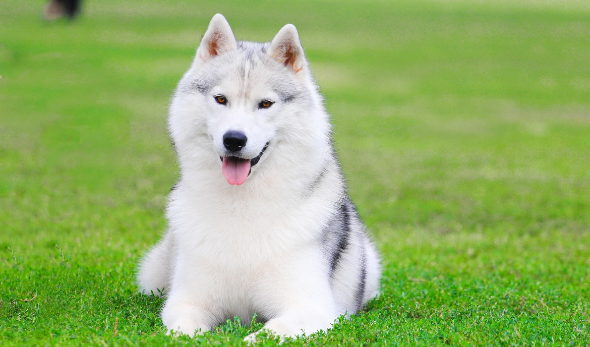
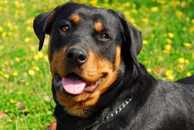

Labrador retriever
A friendly and social breed known as guide and companion dogs. They are very intelligent and trainable.German Shepherd
A loyal and protective breed that is used in the police force due to its high intelligence and trainability.
Beagle
A small and energetic breed known for its strong sense of smell. Beagles are usually playful.
poodle
An intelligent breed with a beautiful appearance that exists in different sizes. Poodles need regular care and grooming.Bulldog
A short and muscular race with a special appearance. They are usually calm and kind and adapt well with children.dachshund
A breed with short legs and an elongated body known for its brave and curious personality. They are usually loyal and playful.

Siberian husky dog
A breed with high energy and beautiful appearance, known for its strength and endurance. Huskies are usually sociable and loving.Chihuahua
A small and energetic breed known for its strong personality. They are very dependent on their owner.labrador
An intelligent and energetic breed that adapts well to the family. They are usually used for sports activities and hunting.

Rottweiler
A strong and protective breed known as guard dogs. Rottweilers are loyal and kind. But they need proper training.
shih tzu
A small breed with a beautiful appearance and a friendly personality. Shitzus usually love attention and live well in apartments.